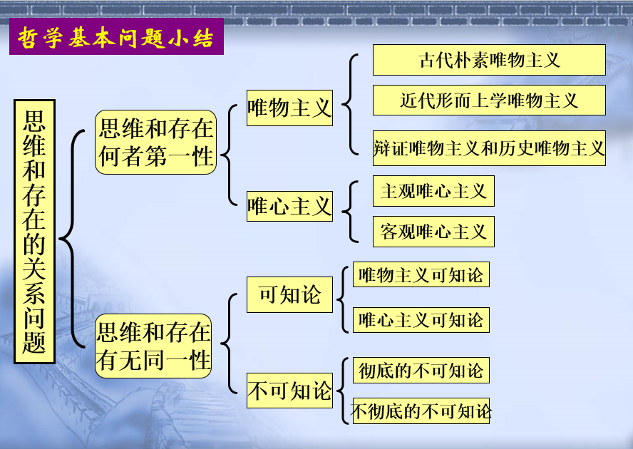
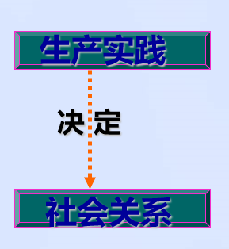
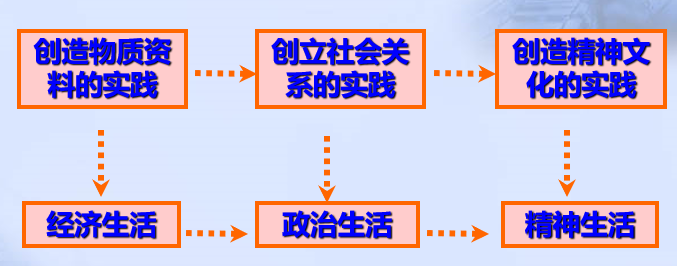
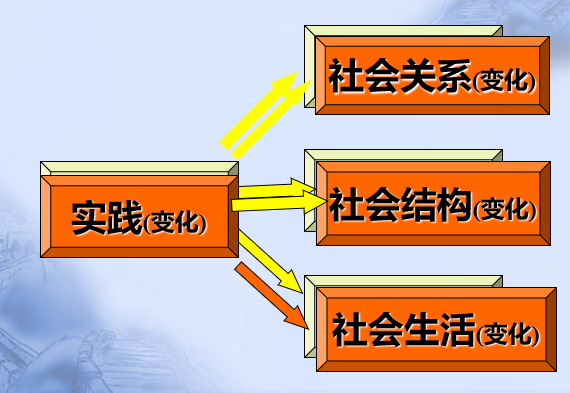
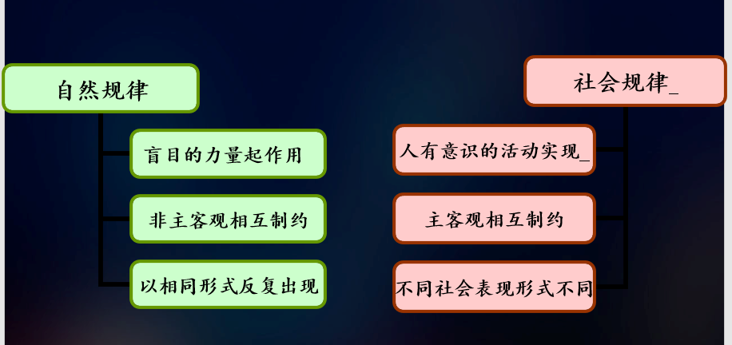
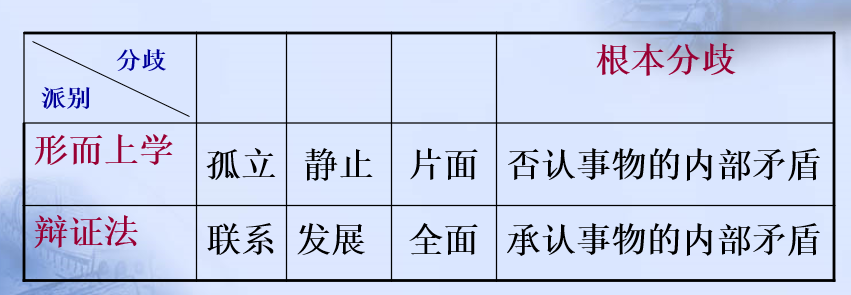
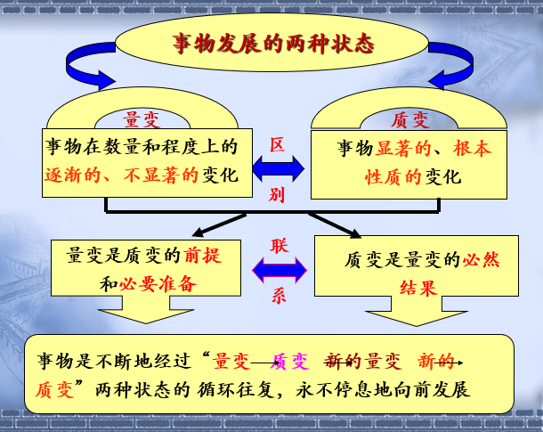

第一节 物质世界和实践
一、物质及其存在方式
1.世界观与哲学基本问题
世界观
世界观亦称宇宙观，是人们对整个世界总的看法和根本观点。
哲学是系统化、理论化的世界观，又是方法论
哲学提供了对于世界以及人与世界关系的全面而深刻的思考。
哲学基本问题
思维和存在的关系问题
- 基本问题第一方面：
物质和意识何为世界本源，谁是第一性
由此划分唯物主义和唯心主义
- 基本问题第二方面：思维和存在（物质和意识）有无同一性，思维能否认识现实世界
由此划分可知论和不可知论

2.物质的客观实在性
物质观
- 古代朴素唯物主义物质观
物质=具体物质形态（个性）
- 近代机械唯物主义的物质观
物质=原子（部分共性）
- 辩证唯物主义的物质观
物质=客观实在（共性）
马克思主义物质观的理论意义
- 坚持了物质的客观实在性原则，坚持了唯物主义一元论，同唯心主义一元论和二元论划清了界限。
- 坚持了能动的反映论和可知论，有力地批判了不可知论。
- 体现了唯物论和辩证法的统一.既肯定了哲学物质范畴同自然科学物质结构理论的联系,又把它们区别开来,从而克服了形而上学唯物主义的缺陷。
- 体现了唯物主义自然观和唯物主义历史观的统一。
马克思主义物质观不仅认为自然界是物质的，人类社会本质上也是物质的。
3.物质的存在方式
运动是物质的存在方式和根本属性
因为：
- 没有运动就没有物质的存在本身
- 物质的其他属性都是在运动的基础上产生并随着物质运动状态的变化而变化。
(1)运动的含义
运动是标志一切事物和现象的变化及其过程的哲学范畴。
(2)物质和运动的关系
- 物质是运动的物质，没有不运动的物质
形而上学：否认运动是物质的根本属性
- 运动是物质的运动，没有脱离物质的运动
唯心主义：否认物质是运动的主体，主张某种精神的运动
(3)静止是运动的特殊形态
静止是物质运动在一定条件下的稳定状态，包括空间位置和根本性质暂时未变这样两种运动的特殊状态
静止是运动的量度，不了解静止，就无法了解运动
相对静止是物质分化的根本条件，不了解相对静止，就不可能理解物质的多样性
(4)运动与静止的关系
运动是无条件、和绝对的；静止是有条件的、相对的
运动和静止相互依赖、相互渗透、相互包含(动中有静、静中有动)
无条件的绝对运动和有条件的相对静止构成了对立统一的关系
马克思的“物质范畴”与传统唯物主义哲学的区别
*又称马克思主义唯物主义哲学特点
社会性和实践性
马克思主义哲学的基本立场是唯物主义哲学
4.实践
(1)实践是人类能动地改造世界的社会性的物质活动
实践活动是人所特有的与动物的本能活动相区别的社会性的能动的活动
实践活动是与主观的精神活动相区别的客观的物质活动
实践是人的存在方式
- 实践是人所独有的活动
- 实践集中表现了人的本质的社会性
- 实践对物质世界的改造是对象性的活动
(2)实践的基本类型
- 物质生产实践
- 社会政治实践
- 科学文化实践
- 虚拟实践
(3)实践的基本结构
- 实践主体：个体主体、群体主体、人类主体
- 实践客体：天然客体/人工客体，自然客体/社会客体，物质性客体/精神性客体
- 实践中介：物质性工具系统，语言符号工具系统
(4)实践的基本特征
- 实践具有直接现实性(物质性)
因为其实践主体、实践工具、实践客体都是客观现实
- 实践具有自觉能动性
实践不同于动物的本能，有目的、有动机，接受意识的指导，能动地改造客观物质世界
- 实践具有社会历史性
实践的水平和程度、手段和方法，总是受社会历史条件的限制,它自己也有一个不断发展的历史进步过程
实践的目的总是同一定时代的历史任务相联系
实践不是个人孤立的活动，总是要同社会发生明显的或隐蔽的联系
无论何种形式的实践都内在地包含着人与自然、人与社会、人与自我意识的关系，包含着物质变换、活动交换和观念的转换
(5)从实践出发理解社会生活的本质
- 实践是使物质世界分化为自然界与人类社会的历史前提，又是使自然界与人类社会统一起来的现实基础
- 实践结果出现了自然界和人类社会的区分
- 人以实践的方式实现人与自然的和谐统一
- 实践是人类社会的基础
- 实践是社会关系形成的基础

- 实践形成了社会生活的基本领域

- 实践构成了社会发展的动力

*物质生产实践是马克思实践概念的一个重要的、基础性内容，但这并不是唯一的、全部的内容。在马克思主义哲学里，广义的“实践”其实包括了人类的一切活动。物质生产活动、社会交往活动乃至精神创造活动都是人类认识世界和改造世界的实践活动
马哲与传统哲学的区别
传统哲学致力于找到一个超越现实同时又统摄现实的先验的本原；是从一个先验或者固定的本质出发来观照世界、解释现实，前者是后者的观照标准
马克思主义哲学把这个方向逆转，主张在现实的关系、活动、过程中（也就是在现实的实践过程中）把握事物的本质和规律，提供了一种动态的观照世界的方式
总结：
- “实践”是马克思主义哲学的根本特征、根本原则
- 哲学家们只是用不同的方式解释世界，问题在于改变世界
- 马克思主义哲学的首要的基本的观点是实践
二、物质与意识的辩证关系
1.意识的结构
知
指的是人的认识方面。是对知识和理性的追求
知是构成意识的最主要部分。因此，我们平常所说的意识往往就是指知。如，环境意识
情
指的是情绪、情感，是对事物的心理感受、体验及态度
情绪和情感对人体的生理过程，对人的行为活动有一定的支配调节作用
情感分为三种：
- 感受性情感
这种情感与人的认识过程的感觉相联系，属于低层次的或基础性情感。如，恐惧、痛苦、舒适、愉悦、悲哀、爱欲等
- 知悟性情感
它是人们对某种心境的感悟和知觉，如，空虚感、孤独感、充实感、安全感、平静感、和谐感等
- 思维性情感
这类情感具有明显的理性特征，如审美感、道德感、正义感、崇高感、神圣感等
情感有善恶之分
有些情感甚至是病理性的,这种情感除了社会制度和环境的影响之外，往往与人的正常的情感受挫而发生的畸形有关
意
意指的是意志，就是人类在追求一定目的时表现出来的信心、毅力、坚强不屈的精神状态
意志鲜明地体现了人的主体性
2.意识的起源
3.意识的本质
(1)意识是人脑这样一种特殊物质的机能和属性
(2)意识是客观存在的主观映象
(3)意识是客观内容与主观形式的统一
- 意识的主观形式有客观内容
主观形式：感性形式、理性形式
- 意识的主观差别有客观根源
4.意识的能动作用
5.主观能动性与客观规律性
(1)规律及其特点
(2)自然规律与社会规律的联系与区别
- 自然规律：自然现象固有的、本质的、必然的、稳定的联系
- 社会规律：通过人们的活动表现出来的社会生活过程诸现象间的本质的、必然的、稳定的联系
- 二者之间的联系：都具有客观物质性，不以人的意志为转移
- 两者之间的区别

(3)主观能动性与客观规律性的统一
一方面，尊重客观规律性是正确发挥主观能动性的前提。
另一方面，只有充分发挥主观能动性，才能正确认识和利用客观规律。
实践是客观规律性与主观能动性统一的基础。
(4)正确发挥主观能动性的前提和条件
- 从实际出发是正确发挥人的主观能动性的前提。
- 实践是正确发挥人的主观能动性的基本途径。
- 正确发挥人的主观能动性，还依赖于一定的物质条件和物质手段。
6.物质与意识的辩证关系
(1)物质决定意识
*搜索 意识的起源、意识的本质
(2)意识对物质具有反作用
*搜索 意识的能动作用
(3)主观能动性与客观规律性的统一
三、世界的物质统一性
1.意识统一于物质
2.人类社会统一于物质
人类社会的物质性
- 人类社会是物质世界的组成部分
- 人类获取生活资料的活动是物质性的活动
- 人类社会存在和发展的基础是物质资料的生产方式
3.世界的物质统一性原理的重大哲学意义
世界的物质统一性要求在认识问题和解决问题时必须坚持实事求是，一切从实际出发的原则。这是实践中形成的现实的、动态的多样性统一，是马克思主义的基石。
第二节 事物的联系与发展
一、辩证法的含义及其发展
马克思主义哲学的辩证法：唯物辩证法
唯物辩证法的特点：
- 对黑格尔唯心主义辩证法进行批判性吸收和改造
- 辩证法是关于自然、人类社会和思维发展的最一般规律的科学，是人们认识世界和改造世界的根本方法
- 辩证法是关于事物普遍联系和永恒发展的学说
- 辩证法的规律是来源于客观现实，而不是来自主观精神或绝对观念
- 此外，马克思的辩证法体现在将资本主义生产方式视作一个处于运动过程中的有机整体
- 唯物辩证法的总特征：联系和发展
二、唯物辩证法的总特征：联系和发展
“联系”和“发展”是客观世界最一般的状态，因而也是客观世界所共有的最一般的规律。
（一）事物的普遍联系
1.联系的含义
联系是指事物内部诸要素之间和事物之间(联系的主体)，相互影响、相互制约和相互作用（联系的内涵）的关系。
2.联系的特点
- 客观性
- 普遍性
- 世界上任何一个事物内部的诸要素是相互联系的
- 任何一个事物与其他事物也处于相互联系之中
- 整个世界是相互联系的统一体
- 多样性
必然联系 和 偶然联系
本质联系 和 非本质联系
直接联系 和 间接联系
内部联系 和 外部联系
- 条件性
条件是对事物存在和发展发生作用的诸要素的总和
- 条件对事物发展和人的活动具有支持或制约作用，有利条件支持和促进事物的发展，不利条件制约和阻碍事物的发展
- 条件是可以改变的，人们在条件面前并不是消极无为的，经过努力化不利为有利条件，可以创造出事物发展所需要的条件
- 改变和创造条件不是任意的，必须尊重事物发展的客观规律
3.联系与系统
- 系统的特征：整体性
系统整体的功能并不是各个要素功能的简单相加，系统作为整体具有各个要素单独所不具有的特殊的功能，而这个功能是在各个要素之间的相互作用（结合）中产生的新的功能。
结构：要素的组合方式。
一个系统的结构最合理时，其他要素不变的情况下它的功能能够达到最佳状态
- 整体与部分的关系
- 整体离不开部分，整体是由部分构成的
- 部分也离不开整体，部分离开整体就不具有它原来所具有的功能和意义
马克思关于事物普遍联系的原理，要求人们要善于分析事物的具体联系，确立整体性、开放性观念，从动态中考察事物的普遍联系
（二）事物的变化发展
1.联系构成运动
2.发展
发展是前进的、上升的运动（从低级到高级，从简单到复杂的运动）
发展的实质是新事物的产生和旧事物的灭亡
- 新事物，是指合乎历史前进方向、具有远大前途的东西
- 旧事物，就是丧失历史必然性、日趋灭亡的东西
新事物不可战胜的原因
- 新事物有新的要素、结构和功能，适应变化了的环境和条件；旧事物的要素和功能已不适应环境和条件
- 新事物在旧事物的“母体”中孕育成熟，既否定了旧事物中的消极因素，又保留了合理因素，并增添了新内容
- 社会历史领域里新事物符合广大人民根本利益，能够得到人民的拥护和支持，因而必然战胜旧事物
两种发展观
事物的发展是一个过程
-
从形式上看，是事物在时间上的持续性和空间上的广延性的交替
- 从内容上看，是事物运动形式、形态、结构、功能和关系上的更新

（三）联系和发展的基本环节
范畴：指基本概念，是人们的思维对客观事物的普遍本质的概括和反映
1. 内容与形式
从构成要素和表现方式上反映事物的一对范畴
- 内容：构成事物的一切要素的总和
- 形式：把内容诸要素统一起来的结构或表现内容的方式
- 任何事物都是内容和形式的统一。内容是事物存在的基础，对形式有决定作用；内容变化了，形式迟早会发生变化；形式对内容具有反作用
2.本质与现象
揭示事物内在联系和外在表现的一对范畴
- 现象 （真象、假象）：事物的外部联系和表面特征，是事物本质的外在表现
- 本质：事物的根本性质，是构成事物的诸要素之间的内在联系
- 本质与现象相互区别。本质与现象相互依存
3. 原因与结果
揭示事物引起和被引起关系的一对范畴
- 含义
- 原因：能引起某一现象的现象
- 结果：被某种现象引起的现象
- 在事物的确定关系中，因果区分是确定的，不能倒果为因，也不能倒因为果；
在事物发展的无限链条中，因果区分又是不确定的、相互转化的。
- 意义:增强人们活动的自觉性、预测性和调控性
4. 必然与偶然
揭示事物产生、发展和衰亡过程中的不同趋势的一对范畴
- 必然：事物联系和发展过程中确定不移的趋势，在一定条件下具有不可避免性
- 偶然：事物联系和发展过程中不确定的趋势
必然与偶然相互依存。
必然与偶然相互转化。
5.现实与可能
反映事物的过去、现在和将来关系的一对范畴
- 现实：相互联系着的实际存在的事物的综合
- 可能：包含在事物中、预示事物发展前途的种种趋势，是潜在的尚未实现的东西
- 关系：现实与可能相互区别。
现实与可能相互转化。
辩证法三大规律
- 对立统一规律——事物发展的动力和源泉
- 量变质变规律——事物发展的两种状态
- 否定之否定规律——事物发展的道路和方向
三、对立统一规律是事物发展的根本规律
对立统一规律是唯物辩证法的实质和核心
- 它揭示了事物普遍联系的根本内容和变化发展的内在动力，从根本上回答了事物为什么会发展的问题
- 它是贯穿于唯物辩证法其他规律和范畴的中心线索，也是理解这些规律和范畴的钥匙
- 它提供了人们认识世界和改造世界的根本方法——矛盾分析法
（一）矛盾的同一性和斗争性及其在事物发展中的作用
1.矛盾及其基本属性
哲学上的矛盾是反映事物内部和事物之间对立统一关系的哲学范畴。
逻辑矛盾与辩证矛盾
- 逻辑矛盾是思维中的矛盾，是违背了逻辑规则所造成的。因此在现实中并不存在这种矛盾；而辩证矛盾是客观事物本身存在的矛盾。
- 逻辑矛盾必须要排除，而辩证矛盾是不能排除的，只能解决。
矛盾的基本属性
- 斗争性是指矛盾双方相互排斥、相互对立的性质，体现着双方相互排斥、相互分离的趋势。
- 同一性是指矛盾双方相互依存、相互贯通的性质和趋势，有两方面的含义：
2.同一性和斗争性的关系
- 同一性和斗争性相互联结，相辅相成
- 同一性是有条件的、相对的，斗争性是无条件的、绝对的
矛盾的同一性使一个事物的矛盾统一体处于稳定的状态，使事物处在静止状态，而静止是相对的，所以同一性是相对的；而斗争性则要打破矛盾统一体，因此，双方矛盾斗争过程是运动过程，运动是绝对的，所以斗争性是绝对的。
- 斗争性与同一性相结合，构成事物的矛盾运动，推动事物的变化发展
3.矛盾的同一性和斗争性在事物发展中的作用
（矛盾是事物发展的根本动力）
-
同一性对事物发展的作用
- 同一性是事物存在和发展的前提，使矛盾双方互为发展条件，在统一体中得到发展
- 同一性使矛盾双方相互吸取有利于自身的因素，在相互作用中各自得到发展
- 同一性规定着事物转化的可能和发展的趋势
-
斗争性对事物发展的作用
- 斗争性促进矛盾双方力量的变化，为对立面的转化、事物的质变创造条件
- 斗争性是一种矛盾统一体向另一种矛盾统一体过渡的决定力量
-
在事物发展过程中，同一性和斗争性相互结合，共同发生作用，但在不同条件下，二者所处的地位会有所不同
在一定条件下，矛盾的斗争性可能处于主要的方面，而在另外的条件下，矛盾的同一性又可能处于主要的方面
（二）矛盾的普遍性和特殊性及其相互关系
事物的性质是由主要矛盾的主要方面所规定的
构成事物的诸多矛盾(主要矛盾和次要矛盾)以及构成每一矛盾的不同方面(矛盾的主要方面和次要方面)各有不同的性质、地位和作用。
- 主要矛盾是指在事物发展过程中处于支配地位、对事物发展起决定作用的矛盾。它强调的是在复杂事物发展过程中，许多矛盾的地位和作用不平衡，其中必有一种矛盾是主要的
- 矛盾的主要方面是指在事物内部居于支配地位、起主导作用的矛盾方面。它强调的是同一矛盾中，矛盾双方有主次之分，其地位和作用是不平衡的，有一方是主要方面
- 主要矛盾一般适用于“办事情”，解决问题。在事物的发展过程中怎样集中力量找出问题的关键，抓住重点，解决矛盾，推动事物的发展
- 矛盾的主要方面一般适用于“看问题”，认识事物。在事物存在的利与弊、优与劣、功与过、长处和短处等方面，针对事物的性质作出评价与判断，强调对这个事物当前状况的认识
“两点论”与“重点论”
- “两点论”是指在分析事物的矛盾时，不仅要看到矛盾双方的对立，而且要看到矛盾双方的统一；不仅要看到矛盾体系中存在着主要矛盾、矛盾的主要方面，而且要看到次要矛盾、矛盾的次要方面
- “重点论”是指要着重把握主要矛盾、矛盾的主要方面，并以此作为解决问题的出发点
“两点论”和“重点论”的统一要求我们，看问题既要全面地看，又要看主流 、大势、发展趋势。
普遍性与特殊性的辩证关系
- 矛盾的普遍性即矛盾共性，矛盾的特殊性即矛盾的个性
- 矛盾共性是无条件的绝对的，矛盾个性是有条件的相对的
任何事物都是共性和个性统一体，共性寓于个性之中，没有离开个性的共性，也没有离开共性的个性
矛盾普遍性和特殊性的关系是矛盾问题的精髓。它具有重要意义：是“具体问题具体分析”的方法论基础；是马克思主义普遍原理与具体实际相结合的哲学基础，也是建设中国特色社会主义的哲学依据；它具有正确地把马克思主义与本国实际和时代发展相结合的实际意义。
四、量变质变规律（事物发展的两种状态）
1.质、量、度
-
质是指一事物同他事物区别开来的内在规定性
- 质与事物的存在是直接同一的
- 质是多方面的
- 质是认识事物的开始
- 量是事物存在发展的规模、程度、速度以及它的构成成分在空间上的排列等可以用数量表示的规定性
- 量与事物的存在不具有直接同一性
- 量也是多方面的
- 量的认识是对事物认识的深化和精确化
- 度是保持事物质的稳定性的数量界限，即事物的限度（或幅度、范围）
- 质和量的统一
- 临界点（关节点）：一定的质所能容纳的量的活动范围的最高界限或最低界限
2.量变和质变的辩证关系
- 量变是事物数量的增减和场所的变更，是一种连续的、逐渐的、不显著的变化
- 量变是在度的范围内的变化
- 量变是两个临界点之间的运动
- 量变体现了事物发展的连续性
- 量变是多方面的
- 质变是事物性质的根本变化
- 质变是一种飞跃
- 质变体现了事物发展的间断性
- 质变也是多方面的
- 量变与质变的辨证关系
- 量变是质变的必要准备。（质变依赖于量变）——从量变到质变的转化
- 质变是量变的必然结果
- 量变和质变是相互渗透的
- 在总的量变过程中有阶段性和局部性的部分质变
- 在质变过程中也有旧质在量上的收缩和新质在量上的扩张

质量互变规律体现了事物发展的渐进性和飞跃性的统一
发展是连续性和间断性的统一
五、否定之否定规律(事物发展的道路和方向）
1.肯定和否定
事物内部存在着肯定因素和否定因素
- 肯定因素：维持现存事物存在的因素
- 否定因素：促使现存事物灭亡的因素
⒉肯定和否定的辩证关系:
3. 辩证否定观
- 否定是事物的自我否定，是事物内部矛盾运动的结果
- 否定是事物发展的环节
任何领域的发展不可能不否定自己从前的形式
- 否定是新旧事物联系的环节
经过否定产生的新事物虽然与旧事物相比有本质上的区别，但新事物又和旧事物有着密切联系
- 辨证否定的实质是“扬弃”
既克服又保留、既批判又继承
形而上学否定观
- 否定是纯属外力的否定
- 否定是事物发展过程的中断、终结
- 否定是绝对的否定即否定一切
4. 否定之否定规律
事物自我运动和发展的完整过程是由肯定——否定——否定之否定三个环节、两度否定构成的有规律的过程。
否定之否定规律的意义
- 自我完善的两次否定三个阶段，要求人善于将内外、主客两个世界统一起来
- 前进性和曲折性的统一，要求人在苦难中成长
- 自我完善要通过回到出发点来实现，要求人在前进、趋新、创造的过程中勿忘本真
发展是前进性和曲折性的统一
否定之否定规律使事物的发展呈现出波浪式、螺旋形的上升运动过程。
否定之否定规律揭示了事物发展的前进性与曲折性的统一。前进性体现在：每一次否定都是质变，都把事物推到新阶段；每一周期都是开放的，不存在不被否定的终点。曲折性体现在回复性上，其中有暂时的停顿或倒退，但是经过曲折终将为事物的发展开辟道路。这表明事物的发展不是直线前进，而是一个不断反复的过程。
否定之否定规律的方法论意义
否定之否定规律对于人们正确认识事物发展的曲折性和前进性，具有重要的指导意义，按照否定之否定规律办事，要求我们对待一切事物都要采取科学分析的态度，反对肯定一切和否定一切的形而上学否定观。
第三节 唯物辩证法是认识和改造世界的根本方法
一、辩证思维方法
1.归纳和演绎
（1）归纳和演绎的含义
- 归纳：是指从许多个别的事物中概括出一般性结论的推理形式。
- 演绎：是以一般性原则为前提推导出个别结论的推理形式。
- 归纳和演绎互为前提，相互补充，不可分割。
(2)归纳和演绎的辩证关系
2.分析和综合
（1）分析和综合的含义
- 分析：在思维中把认识对象分解为各个部分、方面、要素，以便分别加以研究的思维方法
- 综合：在把整体分解成各个因素的基础上，再把各个因素整合成一个整体的思维活动，但是综合绝不是把各部分、各组成因素机械地凑合起来或装配在一起，而是在思维中把对象的各个本质的方面按其内在联系有机地结合成一个统一的整体
(2)分析和综合的辩证关系
分析是综合的基础，综合是分析的完成，只有把两者结合在一起，才能构成一个完整的、科学的认识过程。
3. 抽象与具体
（1）抽象和具体的含义
- 感性具体：人的感觉器官所得到的生动而具体的知觉表象
- 抽象：通过分析把整体分解成各个部分，从纷纭的偶然现象中抽取出各个必然的本质的因素，以达到对具体事物的某一本质方面的认识
- 思维具体：是对客观事物的各种抽象按其内在联系统一起来的思维过程和方法，是这一对象在思维中的完整再现
（2）从抽象上升到具体
- 感性具体是认识的起点
- 抽象是对感性具体的否定，但它又包含着对自身的否定，是向思维具体的接近
- 思维具体是对感性具体和抽象双重否定最终形成比较完整的系统的概念和理论体系
4. 逻辑和历史的统一
（1）含义
- 历史的方法：是人们在研究事物时，按照研究对象产生和发展的自然行程进行研究并揭示其发展规律的思维方法
- 逻辑的方法：是人们在研究事物时以理论的形式研究和揭示事物发展规律的思维方法
（2）历史和逻辑相统一
- 一方面，逻辑与历史是一致的
- 另一方面，历史与逻辑的统一又包含着差异和对立
现代科学思维的一般方法
-
第一类：控制方法
控制方法就是主体与客体反复进行施控和受控的相互作用的动态思维方法，它的根本目的在于实现控制。
包括反馈方法、黑箱方法、功能模拟方法以及信息方法和择优化方法等
-
第二类：信息方法
信息方法是把系统的运动过程当作信息传递和转换的过程，通过对信息流程的分析和处理，达到对某个复杂系统运动过程和规律性认识的方法。
-
第三类：系统方法
系统方法以系统论为理论基础，运用系统的观点来分析和综合事物，把对象作为多方面、多要素联系的动态整体来研究。
作为方法群，主要有整体性方法、有序性方法、系统等级分析方法、模型化和优化方法等。
-
第四类：结构-功能方法
结构方法和功能方法分别是从结构上和功能过程来认识、复制和创造事物的方法。二者的辩证统一，就是结构-功能方法。
-
第五类：模型化方法和理想化方法
模型化方法通过研究模型来揭示原型的形态、特点和本质
理想化方法通过在思维中构建事物的理想模型、理想关系，并在此基础上进行思维中的理想操作和理想实验。